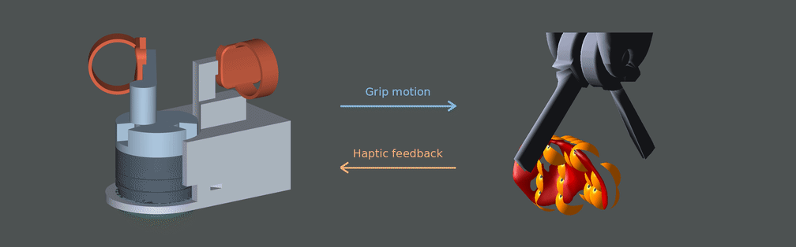
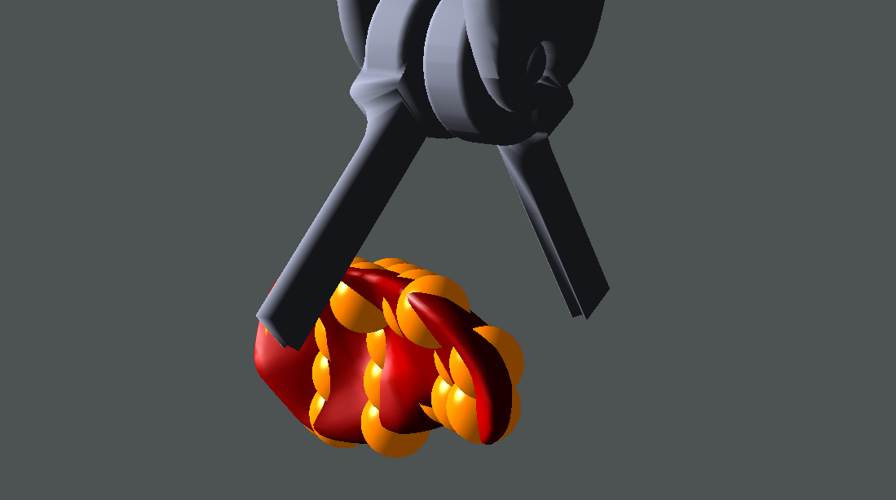
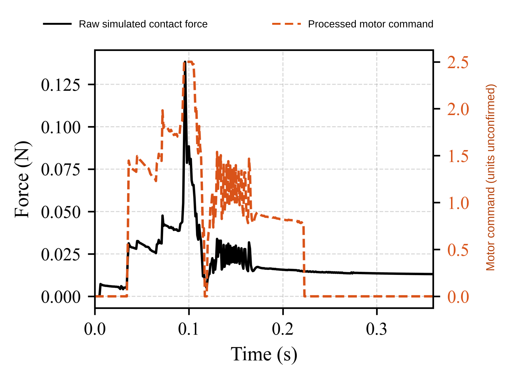

Approximately 100–200 Hz
Outer Simulation Loop
- SOFA scene update
- Soft-tissue deformation
- Contact detection
- Contact-force processing
- K, B, and xproxy estimation
SOFA-based tissue simulation with embedded grip feedback
Haptic Force-Cepx · Team Prototype · Surgical Training Research
Course Instructor: Jeremy Brown
A closed-loop haptic prototype coupling a physical motorized gripper with SOFA-based soft-tissue simulation for real-time surgical training research.

01 / The problem
When direct tissue resistance is unavailable in robot-assisted manipulation or virtual training, users must rely heavily on visual cues to judge contact. This prototype explores how simulated tissue contact can be felt through a physical gripper.
Grip motion drives a virtual dVRK PSM gripper in SOFA. Simulated contact information is converted into resistance at the motorized grip controller, closing the loop between hand motion, tissue deformation, and haptic feedback.
02 / Closing the loop

03 / Two update rates
Approximately 100–200 Hz
Over 1 kHz
K is estimated stiffness, B is damping, and xproxy is the local equilibrium position. The embedded loop uses the latest parameters and encoder state between simulation updates. Rates are reported in the project report, rather than independently benchmarked here.
04 / Engineering implementation
A SOFA scene couples the virtual dVRK PSM gripper with a deformable liver model. Contact proxy spheres support collision handling; constraint-based contact information feeds the local parameter estimate.

The prototype combines a direct-drive BLDC motor, an MT6701 magnetic encoder, an ESP32-C6 controller, and a TMC6300 motor driver with our 3D-printed finger rings, moving grip, and motor holder. Serial communication exchanges grip state and haptic parameters with the host.

05 / Engineering evidence
A representative pinch motion illustrates the relationship between raw simulated contact force and the processed motor command. This is a preliminary engineering result from a single example, not a formal performance or user evaluation.

The orange trace is a controller command, not sensor-measured motor torque. Command units remain unconfirmed. This plot does not establish torque tracking accuracy or clinical effectiveness.
06 / Scope and next steps
Develop independent actuation for the gripper arms, extend feedback to additional degrees of freedom, and conduct structured engineering and user evaluations. These remain proposed next steps.